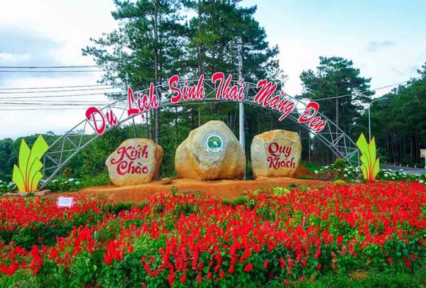
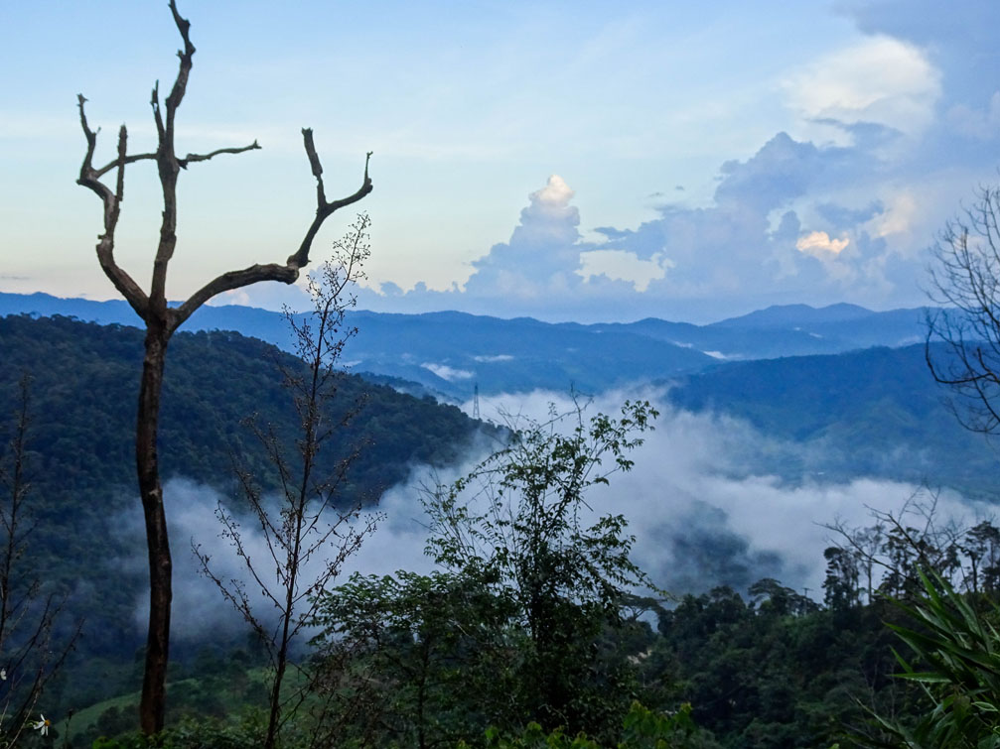
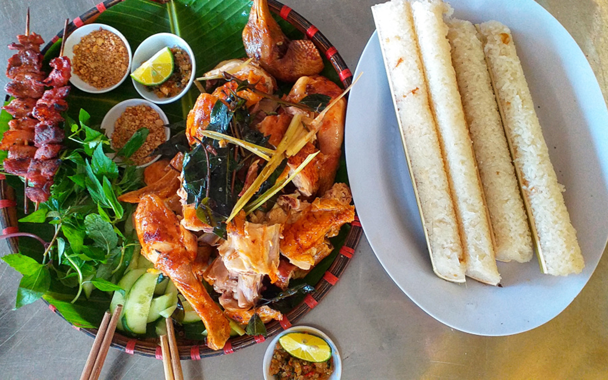

Măng Đen Kon Tum
Măng Đen là một thị trấn nhỏ, rộng 148,07 km2 trên cao nguyên, thuộc huyện Kon Plong, cách thành phố Kon Tum, tỉnh Kon Tum khoảng 60 km. Măng Đen được mệnh danh là "Đà Lạt thu nhỏ" với rừng nguyên sinh, hồ, thác nước, rừng thông, khí hậu mát mẻ trong lành, không gian yên bình.
Mùa đẹp
Mùa đông khách du lịch nhất của Măng Đen là từ tháng 10 đến tháng 12 hằng năm. Đây là thời điểm Kon Tum se lạnh xen lẫn nắng ấm, tiết trời khô ráo. Tết Dương lịch là dịp hoa mai anh đào nở rộ. Tuy nhiên tùy thời tiết mà hoa có thể nở muộn hơn. Mỗi thời điểm Măng Đen đều có hoa nở. Nếu đến đây vào tháng 2, bạn sẽ thấy hoa mimosa và hoa ban, tháng 3 hoặc 4 sẽ có phượng tím. Sau thời điểm này còn có hoa sim tím.
Di chuyển
Du khách từ Hà Nội nên sử dụng đường bay vì khá xa, khoảng 1.100 km. Sân bay gần nhất để đến
Măng Đen là Pleiku (Gia Lai), cách khoảng 100 km, thời gian di chuyển bằng ôtô khoảng 2 tiếng.
Du khách từ TP HCM tự lái xe di chuyển theo QL14, khoảng cách 600 km, qua Bình Phước, Đăk Nông,
Đăk Lăk, Gia Lai.
Xe khách từ TP HCM, khởi hành từ Bến xe miền Đông có các nhà xe như Long Vân, Minh Quốc, Phong Phú,
Phượng Thu... Giá vé từ 250.000 đồng đến 450.000 đồng. Thời gian di chuyển khoảng 10 đến 12 tiếng.
Chơi đâu
Khu du lịch thác Pa Sỹ
Nằm trong tổng diện tích 25 ha, khu du lịch sinh thái thác Pa Sỹ gồm hệ thống đường đi, nhà rông, xưởng sản xuất sản phẩm thủ công mỹ nghệ, nhà trưng bày văn hóa, trang trại trồng rau và hoa. Trung tâm của khu du lịch là thác Pa Sỹ ở độ cao khoảng 1.500 m so với mực nước biển. Thác được hình thành từ 3 ngọn suối lớn nhất ở Măng Đen, nên được gọi là Pau Suh (có nghĩa là ba nguồn suối chụm lại thành một dòng).
Hồ Đăk Ke

Hồ Đăk Ke có tên gốc là hồ Toong Rơ Poong, rộng khoảng 3 ha nằm ở trung tâm thị trấn Măng Đen. Hiện hồ được đầu tư các dịch vụ giải trí như chèo thuyền, đạp vịt, câu cá, ăn uống. Du khách có thể thuê xe trâu, xe ngựa để dạo quay hồ ngắm cảnh. Nếu đi vào mùa hè, có thể gặp hàng loạt cây phượng tím nở rộ, còn vào mùa đông là mai anh đào.
Phố đi bộ Măng Đen

Phố đi bộ và ẩm thực Măng Đen còn gọi là Đại lộ Hoàng hôn, nằm ở đường Võ Nguyên Giáp, trung tâm thị trấn. Phố đi bộ có hệ thống khách sạn, nhà hàng không gian kiến trú đầy đủ tiện nghi, phong cảnh với thế non - nước - trời mây, là nơi lý tưởng cho du khách nghỉ ngơi, thư giãn, thưởng thức ẩm thực đặc trưng của Măng Đen.
Ăn gì
Lẩu xuyên tiêu

Món ăn nghe tên đã thấy vị cay, nhưng nhờ đó rất thích hợp với khí hậu Măng Đen.
Nước lẩu được hầm từ các loại rau củ quả, kèm thảo dược như kỷ tử và táo đỏ.
Nước dùng được hầm trong nhiều giờ để ra vị ngọt thanh tự nhiên và trong.
Lẩu xuyên tiêu được phục vụ với hình thức tương tự lẩu Tứ Xuyên, được chia làm hai ngăn với
hai vị khác nhau, trong đó có một ngăn cay và một ngăn không. Để cảm nhận rõ nhất vị ngon
của món ăn, thực khách nên thử phần lẩu cay.
Gà nướng - cơm lam
Đây là món ăn truyền thống của người địa phương. Gà thường được nuôi thả tự nhiên nên thịt săn chắc. Trước khi đem đi nướng, gà được được nhồi lá tiêu rừng, hành, sả, ớt... nên khi chín rất thơm. Bếp than để nướng phải thật nóng, mỗi mẻ nướng khoảng 20 đến 30 phút. Gà nướng ngon nhất khi được ăn lúc còn nóng, lớp da giòn, vàng đều, thịt thơm. Gà nướng thường ăn kèm cơm lam dẻo, muối lạc hoặc vừng.